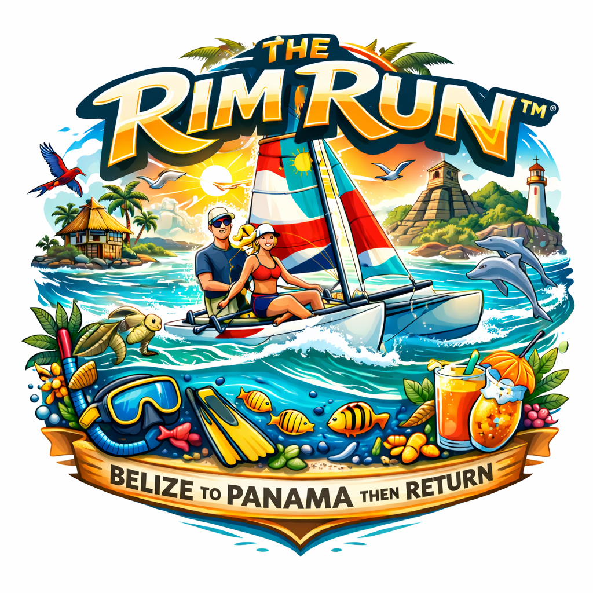

Belize — Lighthouse Reef

Reef Water — The Circuit

Belize — Glover's Reef

An annual coastal circuit of the living reef edge — Mexico to Panama and back. 100+ sites. Every year. As long as the seas permit.
Rim Run™ is the seasonal Mexico → Panama → Mexico coastal circuit that follows the living edge of the Mesoamerican Barrier Reef System and the extended Caribbean coastal ecosystem south to Panama.
Beginning each October, Catamaran Dan departs Mexico and sails south — anchoring over reef water, snorkeling daily, fishing responsibly, provisioning locally, and operating entirely within disciplined daylight sailing segments.
This is not a charter. It is not a cruise. Rim Run™ is structured immersion: reef exploration, anchor life, seamanship repetition, weather awareness, and cultural respect at each landfall.
"The reefs don't need more one-time visitors. They need someone who keeps coming back."
Rim Run™ forms the operational core of the Blue Rim 5™ Global Sailing Expedition — building discipline, rhythm, and fleet cohesion year after year until the fleet is ready for broader global expansion.
Departing Mexico's Yucatán. Circuit One is the operational proof of concept for the full Blue Rim 5™ expedition model.
Belize — Lighthouse Reef
Reef Water — The Circuit
Belize — Glover's Reef

Anchor Down — The Rim Run Way
From Mexico's Yucatán to Panama's Guna Yala and back — 1,500+ nautical miles, two ecosystem zones, two operational hubs. The same loop every year, refined each season. No leg is hurried.
| Country | Key Stops | Days | Why It Matters |
|---|---|---|---|
| 🇲🇽Mexico | Puerto Aventuras · Cozumel · Xcalak · Banco Chinchorro | ~30 | Northern hub — REEF coordination & staging |
| 🇧🇿Belize | Ambergris · Turneffe · Lighthouse Reef · Blue Hole · Glover's · South Water · Placencia | ~117 | World's 2nd largest barrier reef — home waters |
| 🇬🇹Guatemala | Livingston · Río Dulce · Lake Izabal | ~35 | Most stunning inland waterway in the Americas |
| 🇭🇳Honduras | Cayos Cochinos · Utila · Roatán · Guanaja | ~80 | Bay Islands — whale sharks & 100+ ft visibility |
| 🇳🇮Nicaragua | Big Corn Island · Little Corn Island · Pearl Cays | ~29 | Priority Year 1 — essentially unsurveyed |
| 🇨🇷Costa Rica | Tortuguero · Cahuita NP · Puerto Viejo · Manzanillo | ~35 | Jungle meets reef — Reef Check programs dormant for years |
| 🇵🇦Panama | Bocas del Toro · Portobelo · San Blas / Guna Yala | ~44 | Southern hub — REEF training facility & finest snorkeling on circuit |
Rim Run™ is not improvised sailing. It operates on a framework of disciplines built and refined before the first circuit ever launches.
All coastal passages occur in daylight hours. Anchor before dark, every day. Non-negotiable — applies to every vessel on the circuit.
Every stop is selected for reef access. Snorkeling is not a recreational add-on — it is the primary activity. Daily water time is the mission.
Food, water, and supplies are sourced locally at each landfall when possible. This is how respect and economic participation work on the water.
Wind and solar only. No diesel propulsion. Shamrocket and the full fleet operate on the same energy the reef does — zero combustion.
Catch-and-release default. Harvest only when local context supports it. No spearfishing on protected reef. The fish are not trophies.
Learn names. Speak Spanish. Buy local. Ask questions. Listen more than you talk. This is what distinguishes the Nevado Raiders from every flotilla that came before.
Every country on the Rim Run circuit is a distinct world. The same ocean. Radically different people, food, politics, and reef health. These are the waters Rim Run™ will return to every year.


A Hobie Getaway catamaran — 17 feet of shoal-draft, wind-powered reef machine. Two-foot draft means Shamrocket goes places no keelboat can follow: inside the barrier, onto the sand, into the mangroves.
Wind and solar only. Zero diesel. The vessel is not a compromise — the vessel is the point. Small boats. Real seamanship. No passengers.

Shamrocket — Hobie Getaway · 24" draft
Small boats. Real seamanship. Cultural respect. Not a flotilla of matching boats and matching egos — a disciplined collection of real sailors with a genuine appetite for what lies beyond the marina breakwater.
Meet the Captain →
"Better Beachy than Bitchy™" — Anchor down.
nevadoraiders@gmail.com · (928) 250-9763 · White Mountains, AZ